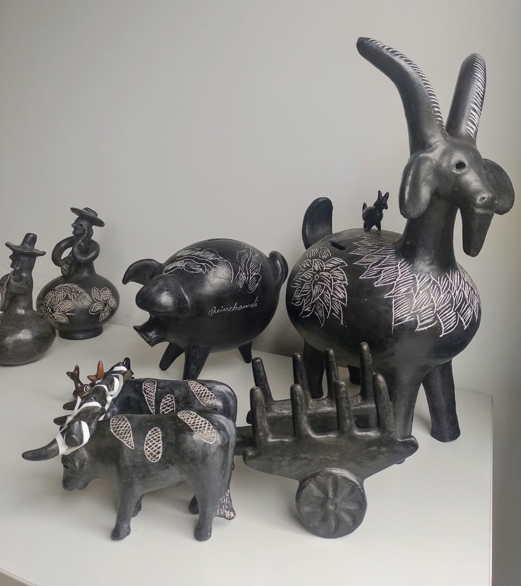

Alfarería de Quinchamalí
Región: Ñuble
Comuna: Chillan
Tipo: Patrimonio Cultural Inmaterial
Declaración: 2014
Estado: En Peligro/ Requiere medidas urgentes
La alfarería de Quinchamalí y Santa Cruz de Cuca es una tradición artesanal chilena de la Región de Ñuble (comuna de Chillán) famosa por sus piezas de greda negra pulida con grabados blancos, siendo la "Guitarrera" su figura más icónica. Nació en la época prehispánica a partir de la alfarería utilitaria del pueblo mapuche, la cual se fusionó con la cultura mestiza y campesina durante la Colonia para retratar animales y personajes locales. Transmitido oralmente de generación en generación por un matriarcado de mujeres loceras, este valioso oficio fue declarado Patrimonio Cultural Inmaterial en Lista de Salvaguardia Urgente por la UNESCO debido al riesgo de desaparecer por la falta de relevo generacional y las dificultades para extraer su materia prima.